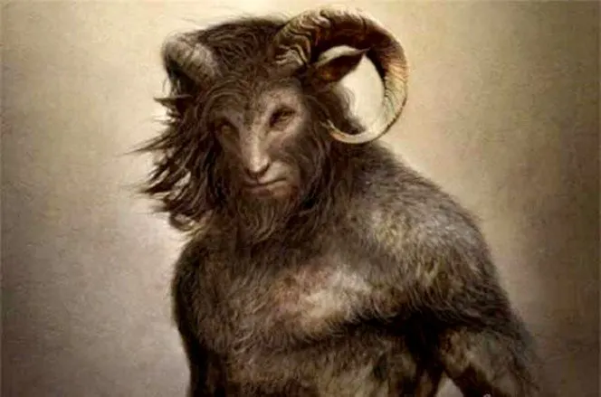

According to urban legend, the Goatman is an ax-wielding half-animal, half-man creature that was once a scientist who worked in the Beltsville Agricultural Research Center. The tale holds that he was experimenting on goats until one experiment backfired, and he was mutated, becoming goat-like himself. He then began attacking cars with an axe, roaming the back roads of Beltsville, Maryland. A variation of the legend tells of the Goat-man as an old hermit who lives in the woods, seen walking alone at night along Fletchertown Road.[1] According to University of Maryland folklorist Barry Pearson, the Goatman legends began "long, long, long" ago and were further popularized in 1971 when the death of a dog was blamed on the Goatman by local residents. Pearson says "bored teenagers" keep the Goatman legend alive by repeating the story and suggesting that the creature attacks couples frequenting the local lover's lane, subsequently stirring interest in sites like Fletchertown Road.
The first reported sighting of the Goatman was in 1957. Eyewitnesses reported seeing it in Forestville and Upper Marlboro in Prince George's County. It wasn't until the 1960s that the first violent encounter would take place.
The story goes that a young couple went to Fletchertown Road and were being bothered by something in the woods. The young man got out of the car to investigate, but he never came back. When an investigation occurred the next day, his severed head was found hanging in a tree above where the car had been parked. His body was never found.
Another unbelievably violent encounter supposedly took place in 1962. The Goatman was accused of killing 14 people, 12 of whom were children, with the other two being adult chaperones. The group was evidently hiking too close to the Goatman's home. Unidentified survivors claimed that the Goatman hacked the victims to pieces with an axe, making noises "only the devil himself" would make. When police arrived, they found half-eaten limbs and a bloody trail leading to a cave. As might be expected, there is no record of this event actually occurring.